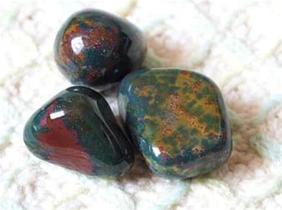

Jasper Stone: A Guide to Choosing, Cleansing, and Using Your Jasper Stone

Jasper, with its captivating variety of colors and earthy energy, has captivated humanity for millennia. This ubiquitous gemstone has graced everything from ancient talismans to modern jewelry, whispering tales of grounding stability and nurturing strength.
This comprehensive guide delves into the fascinating world of Jasper, exploring its history, varieties, properties, and uses. We'll equip you with the knowledge to choose the perfect Jasper stone for your needs, and guide you through the essential practices of cleansing and using it to unlock its full potential.
Unveiling the Allure of Jasper: A Journey Through History
Jasper's presence stretches back through the annals of history, leaving its mark on civilizations across the globe.
- Ancient Echoes: Archaeological evidence suggests Jasper's use dates back to the Paleolithic era, around 35,000 years ago. Found in cave paintings and decorative objects, it's believed to have held symbolic and spiritual significance for early humans.
- Mesopotamia: In Mesopotamia, Jasper was associated with the goddess Ishtar, symbolizing protection and fierceness. It was used in jewelry, seals, and amulets, believed to ward off evil and bring courage.
- Ancient Egypt: The Egyptians revered Jasper as a stone of the afterlife. They used it in funerary rites and crafted scarabs, powerful amulets for protection in the next life.
- Greece and Rome: The Romans valued Jasper for its grounding and stabilizing properties. They believed it could bolster courage, enhance oratory skills, and bring victory in battle. In these civilizations, jasper was believed to possess healing properties and was used for medicinal purposes.
- Indigenous Esteem: Native American cultures across North America held Jasper in high regard. It was seen as a stone of connection to the earth, fostering grounding, wisdom, and nurturing energy.
Throughout history, Jasper has transcended cultures and beliefs, consistently admired for its beauty, durability, and perceived energetic properties.
A Spectrum of Splendor: Unveiling the Colors of Jasper
Jasper's captivating beauty lies in its vast array of colors and patterns. Here's a glimpse into the most prominent varieties:
- Red Jasper: This fiery red stone symbolizes vitality, passion, and grounding energy. It's believed to stimulate strength, courage, and endurance.
- Yellow Jasper: Embracing the warmth of the sun, Yellow Jasper embodies optimism, creativity, and joy. It's associated with mental clarity, focus, and enhanced communication.
- Brown Jasper: Earthy and grounding, Brown Jasper represents stability, security, and connection to nature. It's said to promote feelings of safety, comfort, and resilience.
- Green Jasper: Evoking the verdant hues of nature, Green Jasper signifies growth, abundance, and harmony. It's believed to foster feelings of peace, tranquility, and emotional well-being.
- Black Jasper: Mysterious and protective, Black Jasper embodies strength, grounding, and psychic protection. It's said to shield against negativity, promote emotional stability, and encourage self-discipline.
- Dalmatian Jasper: Playful and unique, Dalmatian Jasper features white spots resembling a Dalmatian dog's coat. It's associated with joy, lightheartedness, and nurturing energy.
- Picture Jasper: A captivating variety featuring landscape-like inclusions, Picture Jasper is believed to stimulate creativity, imagination, and connection to the natural world.
These are just a few examples, and Jasper's color spectrum extends far beyond. From vibrant oranges and deep purples to calming blues and playful multi-colored varieties, there's a Jasper stone to resonate with every taste and intention.
Alternate Names and Jasper Family Members

Jasper boasts a rich tapestry of names associated with its various colors and historical references. Here are some you might encounter:
- Bloodstone: A deep red Jasper variety often associated with increased vitality and courage.
- Mocha Stone: A captivating Jasper with swirled brown and cream inclusions, resembling a cup of mocha.
- Moss Agate: Often mistaken for Jasper, Moss Agate is a chalcedony variety featuring green inclusions resembling moss. It's associated with grounding and connection to nature.
- Leopard Jasper: A captivating Jasper with black spots resembling a leopard's fur, believed to promote protection and inner strength.
- Ocean Jasper: A mesmerizing Jasper with blue and green hues, reminiscent of the ocean's depths. It's associated with tranquility, emotional healing, and connection to the water element.
Understanding these alternate names can help you navigate the world of Jasper with greater ease.
Jasper's Geological Origins
Jasper is a microcrystalline variety of quartz, formed through the deposition of silica-rich minerals over millions of years. Its diverse coloration arises from the presence of various mineral inclusions trapped within its silica matrix. Here's a breakdown of some key factors:
- Iron Oxides: Hematite, a red iron oxide, is responsible for the fiery hues of Red Jasper. Limonite, a yellow iron oxide, contributes to the sunny tones of Yellow Jasper.
- Manganese Oxide: The presence of manganese oxide lends brown and black tones to Jasper varieties.
- Chlorite: This green mineral infuses Jasper with verdant hues, creating Green Jasper.
- Organic Material: Inclusions of organic matter can contribute to a variety of colors, including black and brown, in some Jasper varieties.
Jasper's formation primarily occurs in two geological environments:
- Volcanic Rocks: Molten rock deposits rich in silica can cool and solidify, forming Jasper as part of the volcanic rock.
- Sedimentary Rocks: Over millions of years, weathering and erosion break down rocks rich in silica. These silica-rich sediments can then be deposited in layers, eventually forming Jasper through a process called diagenesis.
The specific geological origins of a Jasper stone can influence its color, patterns, and even its perceived metaphysical properties.
Understanding Jasper's Value and Price
Jasper's value and price can vary depending on several factors:
- Color: Rarer colors like Blue Jasper or vibrant Orange Jasper typically command higher prices.
- Transparency: Opaque Jaspers are generally less expensive than translucent or semi-transparent varieties.
- Pattern: Unique and captivating patterns, like those found in Picture Jasper, can significantly increase value.
- Cut and Polish: The quality of the cut and polish can affect a Jasper stone's brilliance and overall aesthetics, influencing its price.
- Origin: Certain geographical locations might be known for producing Jaspers with specific characteristics, which can impact value.
Generally, Jasper is a relatively affordable gemstone. However, high-quality specimens with exceptional color, clarity, or unique patterns can fetch premium prices.
Here's a rough estimate of Jasper's price range:
- Tumbled stones: $1 - $5 each
- Cabochons (for jewelry): $5 - $20 per carat (depending on quality)
- Carved Jasper pieces: Variable, depending on size, intricacy, and quality
It's important to remember that value is subjective. A Jasper stone that resonates deeply with you, regardless of its price tag, holds immense personal value.
Jasper's Metaphysical Properties
Jasper has been revered for millennia for its perceived metaphysical properties. These beliefs vary depending on culture and personal interpretations. Here's a glimpse into some of the most common associations:
- Grounding and Stability: Jasper, particularly Brown and Red Jasper, is believed to be a powerful grounding stone, fostering a sense of security, stability, and connection to the earth.
- Strength and Stamina: Red Jasper and other vibrant varieties are associated with increased physical and emotional strength, promoting perseverance and vitality.
- Emotional Balance: Green Jasper and other calming colors are believed to promote emotional well-being, fostering peace, tranquility, and reducing anxiety.
- Creativity and Inspiration: Yellow Jasper and Picture Jasper are said to stimulate creativity, imagination, and connection to one's artistic expression.
- Protection and Purification: Black Jasper is believed to offer psychic protection, shielding against negativity and promoting emotional resilience.
- Manifestation and Abundance: Jasper, in general, is associated with the power of manifestation, attracting abundance and success into one's life.
It's important to remember that these are just potential properties. The true magic of Jasper lies in the personal connection you forge with your stone.
Choosing Your Jasper Stone

With Jasper's vast array of varieties, selecting the perfect stone can feel overwhelming. Here are some tips to guide you:
- Intention: Identify your primary intention for using Jasper. Do you seek grounding and stability? Perhaps you desire increased creativity or emotional balance. Choose a Jasper variety that aligns with your specific needs.
- Color Connection: Jasper's colors hold symbolic meaning. Let intuition guide you towards colors that resonate with your desires.
- Visual Appeal: Ultimately, choose a Jasper stone that you find visually appealing. A stone that sparks joy and resonates with your aesthetic is more likely to be a cherished companion.
- Touch and Feel: Hold different Jasper stones and pay attention to how they feel in your hand. Does a particular stone feel energizing or calming? Trust your intuition.
- Ethical Sourcing: When possible, choose ethically sourced Jasper stones. Look for reputable sellers who can provide information about the origin of their stones.
Here's a quick reference chart to aid your selection:
| Intention | Jasper Variety |
|---|---|
| Grounding & Stability | Red Jasper, Brown Jasper |
| Strength & Stamina | Red Jasper, Yellow Jasper |
| Emotional Balance | Green Jasper, Blue Jasper |
| Creativity & Inspiration | Yellow Jasper, Picture Jasper |
| Protection & Purification | Black Jasper |
| Manifestation & Abundance | Any Jasper variety (choose based on color preference) |
RELATED TOPIC: How to Choose the Best Rocks for Tumbling: A Simple and Practical Method
Caring for Your Jasper Stone: Cleansing and Charging
To maintain your Jasper stone's energetic potential, it's recommended to cleanse and charge it regularly. Here are some popular methods:
- Smudging: Pass your Jasper stone through the smoke of sage, palo santo, or another cleansing herb. Visualize negative energy being released from the stone.
- Sunlight or Moonlight: Place your Jasper in direct sunlight (avoid prolonged exposure for brightly colored stones) or moonlight for several hours. Intentionally visualize the stone being infused with positive energy.
- Running Water: Hold your Jasper under running lukewarm water for a few minutes. Visualize any negativity washing away. (Not recommended for very brittle Jasper varieties)
- Sound: Use a tuning fork, singing bowl, or even your own voice to create vibrations around your Jasper. Sound can be a powerful cleansing tool.
- Earthen Cleansing: Bury your Jasper in natural soil overnight. The earth's energy is believed to be deeply cleansing and revitalizing.
- Selenite Bowl: Selenite is a powerful cleansing crystal. Placing your Jasper on a selenite plate or bowl for a few hours is believed to cleanse and recharge it.
Choose the cleansing method that resonates most with you. There's no right or wrong way, as long as your intention is clear.
Charging: After cleansing, you can charge your Jasper using any of the methods mentioned above. Additionally, visualization is a powerful tool. Hold your stone, close your eyes, and envision it being filled with positive, vibrant energy aligned with your intentions.
Remember, consistency is key. Regularly cleansing and charging your Jasper stone helps it maintain its optimal energetic potential.
Utilizing the Power of Jasper: Everyday Uses
Jasper's versatility extends beyond its metaphysical properties. Here are some ways to incorporate Jasper into your daily life:
- Jewelry: Jasper makes stunning jewelry pieces, from pendants and earrings to rings and bracelets. Wearing Jasper jewelry allows you to keep its energy close to your body throughout the day.
- Home Décor: Jasper stones can be beautiful decorative accents, adding a touch of earthy beauty to your space. Place them in your living room, office, or bedroom to promote grounding and positive energy flow.
- Meditation and Crystal Healing: Hold Jasper stones during meditation to connect with their specific properties. Jasper can be a powerful tool for grounding, fostering emotional balance, or stimulating creativity.
- Carry it with You: Keep a tumbled Jasper stone in your pocket or purse as a reminder of your intentions. Touching it throughout the day can help you stay centered and focused.
- Feng Shui: Incorporate Jasper stones into your Feng Shui practice. Red Jasper can activate the fire element in your south zone, promoting passion and vitality. Green Jasper can enhance the wood element in the east zone, fostering growth and new beginnings.
By incorporating Jasper into your daily life, you can unlock its potential to support your well-being and guide you toward your goals.
Where to Find Jasper Stones in the United States
The United States boasts a treasure trove of locations where you can find Jasper in its natural state. While it's not recommended to remove Jasper from protected areas, knowing where it's found can be a fun way to connect with the geology of your region and appreciate its natural beauty. Here's a glimpse into some Jasper-rich regions across the US:
- Oregon: Oregon is a haven for rockhounds, and Jasper is no exception. Eastern Oregon, particularly around Ochoco National Forest and Malheur National Forest, is renowned for its abundance of Red Jasper, Brown Jasper, and Picture Jasper.
- California: From the northern reaches to the southern deserts, California offers diverse opportunities for finding Jasper. The Central Valley and Coast Ranges are known for Red Jasper and Brown Jasper, while the deserts of Southern California can yield Yellow Jasper and Picture Jasper. Keep in mind regulations regarding rockhounding on public lands.
- Texas: The Hill Country of Texas, particularly near Llano and Fredericksburg, is famous for its deposits of Amethyst, but it also harbors beautiful Red Jasper and Yellow Jasper. Always check local regulations before collecting rocks.
- Washington: The Evergreen State offers opportunities to find Jasper in the Cascade Mountains and Olympic Peninsula. Look for Red Jasper, Brown Jasper, and even some Blue Jasper varieties. Obtain necessary permits before rockhounding on public lands.
- Arizona: The deserts of Arizona hold secrets of their own, including deposits of Yellow Jasper and Brown Jasper. Areas near Tucson and Phoenix are known for their rockhounding potential. Remember to respect private property and follow responsible rockhounding practices.
RELATED TOPIC: Agates Rock: How to Find, Identify, and Collect Agates in the US
Important Considerations:
- Rockhounding Regulations: Always check local and federal regulations before collecting rocks on public lands. Permits might be required, and specific limitations on the amount or type of rock you can collect might be in place.
- Respecting Private Property: Never collect rocks from private property without permission.
- Responsible Rockhounding: Leave no trace behind. Minimize your impact on the environment by filling in any holes you create and removing any trash you bring with you.
- Safety First: Be aware of potential hazards in the area, such as loose rocks, wildlife, and extreme weather conditions.
Finding Jasper in its natural state can be a rewarding experience. However, it's important to prioritize safety, respect the environment, and adhere to all regulations.
For a more specific location near you, consider joining local rockhounding clubs or researching online forums dedicated to rock collecting in your area. These resources can offer valuable insights into local geology and potential Jasper-rich locations.
Conclusion
Jasper's captivating beauty and rich history make it a truly remarkable gemstone. From its grounding energy to its diverse colors and uses, Jasper offers a wealth of possibilities for those seeking to connect with the natural world and enhance their well-being.
As you embark on your journey with Jasper, remember to trust your intuition. Choose a stone that resonates with you, care for it with intention, and allow its energy to guide and support you on your path.